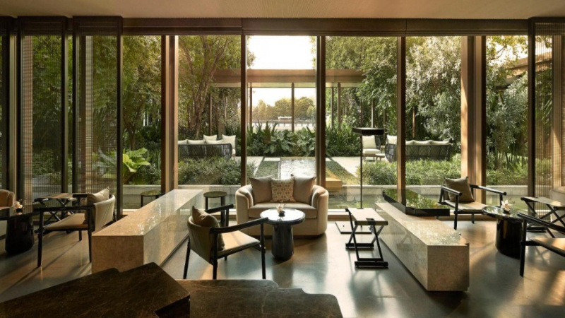
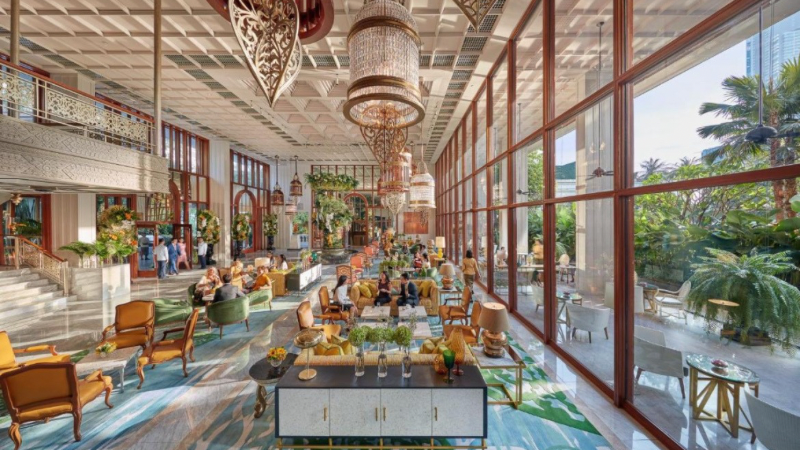

بانكوك: عاصمة التباين بين الأصالة والحداثة
🗓 أفضل وقت للزيارة
- نوفمبر – فبراير: الطقس معتدل وجميل.
- مارس – مايو: درجات حرارة مرتفعة (حتى 40°C).
- يونيو – أكتوبر: أمطار، وزيارات أقل وأجواء هادئة.
💱 العملة وسعر الصرف
- العملة: البات التايلاندي (THB)
- سعر الصرف التقريبي (يوليو 2025): 1 ريال ≈ 8.6 بات
🏙 لمحة عن المدينة والتنقل
تجمع بانكوك بين ناطحات السحاب، القنوات المائية، والمعابد التاريخية. وسائل التنقل: سكاي ترين (BTS)، ميترو (MRT)، تاكسي/Grab، وقوارب نهريّة في تشاو فرايا.
🥢 أفضل 5 مطاعم في بانكوك: تجربة فاخرة ومحلية
- Potong
مطعم تايلاندي–صيني راقٍ، جوهرة في حي “ياوارات” (تشاينا تاون). يديره الشيف Pam Soontornyanakij؛ تقدم تجربة تذوق تتكون من 20 طبقًا يعبر عن تاريخ الأسرة وثقافتها، مع فلسفة “5 عناصر و5 حواس”. يتضمن: “Historical Stories” (كراب ومخبوزات بريوش)، صدر بطة معتقد 14 يومًا، وحلويات مثل بندق وتمر. - Gaggan Anand
مطعم هندي تقدمي – “تجربة مسرح طعام” تشمل 22 طبقًا مع مؤثرات بصرية وصوتية. يجمع بين وصفات هندية معدّلة بإبداع عالٍ ولحظات تفاعلية مع الضوء والموسيقى. - Sorn
أول مطعم في تايلاند ينال ثلاث نجوم ميشلان، متخصص في المطبخ الجنوبي التايلاندي. تجربة تذوق تتألف من 22 طبقًا غنيًا بالتوابل، بما في ذلك: سلطات أرز عشبية، لحوم بحر وفواكه محلية، مليء بالنكهات الحارّة والمنعشة. - Thong Smith (Central Embassy)
نسخة فاخرة من “نودلز القارب”، مع مرق غني ولحم بقري وكوروبوتا بقر ممتاز. أجواء حديثة ومريحة ضمن مركز “سنترال إمباسي”، خيار مثالي للوجبات السريعة ذات الجودة العالية. - Phra Nakhon – Capella Bangkok
يقدم مأكولات تايلاندية أصيلة بأسلوب معاصر، ويطل على نهر تشاو فرايا. أطباق مميزة: لحم خنزير مقلي مقرمش، كاري الروبيان بالأوراق، وسلطة البابايا (سوم تم)، مع الاعتماد على مزارع عضوية محلية.
🏨 أفضل 5 فنادق مع روابط حجوزات
-
Capella Bangkok
فندق فخم بجانب النهر، الأفضل في العالم 2024، خدمات ممتازة وأجواء راقية.
احجز عبر Booking.com
 -
Mandarin Oriental Bangkok
أيقوني، تاريخي ويشتهر بخدمة استثنائية، مفضّل لدى الشيف “نوك”.
احجز عبر Booking.com  -
Four Seasons Hotel Bangkok
إطلالة على النهر، ومطعم Yu Ting Yan الشهير بالمأكولات الصينية.
احجز عبر Booking.com
-
The St. Regis Bangkok
خدمة Butler فاخرة ومرافق مناسبة للعائلات.
احجز عبر Booking.com
-
Cape House Langsuan Hotel
أنيق، غرف واسعة، موقع ممتاز للمسافرين.
احجز عبر Booking.com
يُوصى به حسب الشيف “نوك”.
🌃 أنشطة المساء والحياة الليلية
- مباريات Muay Thai
- أسواق ليلية: Ratchada، Asiatique
- رحلات عشاء بالقوارب على نهر تشاو فرايا
- مساج تايلاندي بأسعار مناسبة
- بارات غير كحولية مثل BKK Social Club في Four Seasons
إضافة صورة لسوق ليلي أو رحلة نهرية هنا